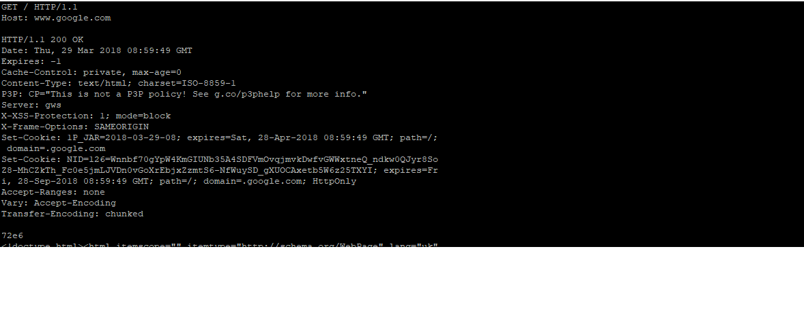
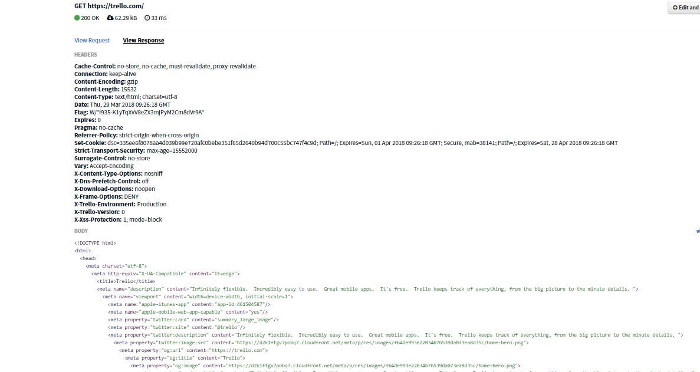
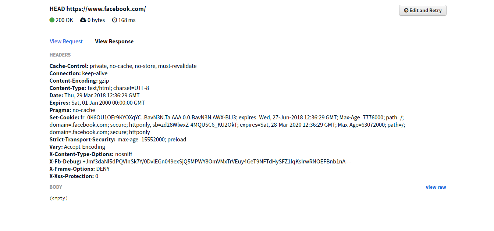

Task 1. Read.
http://code.tutsplus.com/articles/chrome-dev-tools-networking-and-the-console--net-28167
Task2. Play with Chrome Developers Toolkit (DevTools), and "Network" tab.


- Host - Это в основном имя host, включая домен и поддомен.
- User-Agent - Этот заголовок может содержать несколько частей информации, таких как:
- Имя и версия браузера.
- Название и версия операционной системы.
- Язык по умолчанию.
- Accept-Language - Этот заголовок отображает настройки языка по умолчанию. Если сайт имеет разные языковые версии, он может перенаправить нового surfer на основе этих данных.
- Accept-Encoding - Большинство современных браузеров поддерживают gzip и отправляют это в header. Затем веб-сервер может отправить выходной HTML-код в сжатом формате. Это позволяет уменьшить размер до 80% для экономии пропускной способности и времени.
- If-Modified-Since - Если веб-документ уже сохранен в кеше в браузере и вы посещаете его снова, ваш браузер может проверить, был ли документ обновлён
- Cookie - Как следует из названия, это отправляет файлы cookie, хранящиеся в вашем браузере для этого домена.
- Referer - Как следует из названия, этот HTTP header содержит ссылочный url.
- Authorization - Когда веб-страница запрашивает авторизацию, браузер открывает окно входа в систему. Когда вы вводите имя пользователя и пароль в этом окне, браузер отправляет другой HTTP-запрос, но на этот раз он содержит этот header
- Cache-Control - пределение из w3.org: «Поле заголовка Cache-Control используется для указания директив, которые ДОЛЖНЫ выполняться всеми механизмами кэширования по цепочке запросов/ответов». Эти «механизмы кэширования» включают шлюзы и прокси, которые может использовать ваш интернет-провайдер.
- Content-Type - Этот header указывает "mime-type" документа. Затем браузер определяет, как интерпретировать содержимое на основании этого. Например, страница html (или PHP-скрипт с выходом html) может возвращать это:
- Content-Disposition - Этот header указывает браузеру открыть окно загрузки файла, вместо того, чтобы пытаться проанализировать содержимое.
- Content-Length - Когда контент будет передаваться браузеру, сервер может указать его размер (в байтах), используя этот header.
- Etag - Это еще один header, который используется для кеширования.
- Last-Modified - Как следует из названия, этот header указывает дату последнего изменения документа в формате GM
- Location - Этот заголовок используется для перенаправления. Если код ответа 301 или 302, сервер также должен отправить этот header.
- Set-Cookie - Когда веб-сайт хочет установить или обновить файл cookie в вашем браузере, он будет использовать этот header.
- WWW-Authenticate - Сайт может отправить этот header для аутентификации пользователя через HTTP. Когда браузер увидит этот header, он откроет диалоговое окно входа в систему.
- Content-Encoding - Этот header обычно устанавливается, когда возвращаемое содержимое сжимается
Task3. What are differences between HTTP version 1.0 and 1.1?
HTTP 1.1:
- HTTP 1.1 позволяет иметь постоянные соединения, что означает, что вы можете иметь более одного запроса/ответа на одно и то же HTTP-соединение.
- HTTP/1.1 вводит метод OPTIONS. HTTP-клиент может использовать этот метод для определения возможностей HTTP-сервера. Он в основном используется для совместного использования ресурсов Cross Origin в веб-приложениях.
- HTTP 1.1 расширяет поддержку кеширования, используя что-то, называемое тегом сущности. Если 2 ресурса одинаковы, то они будут иметь те же теги сущностей.
- HTTP 1.1 добавляет условные заголовки If-Unmodified-Since, If-Match, If-None-Match.
- Появляется новый код возврата в HTTP/1.1 100 Continue. Это делается для того, чтобы клиент не отправлял большой запрос, когда этот клиент даже не уверен, может ли сервер обработать запрос или уполномочен обрабатывать запрос. В этом случае клиент отправляет только заголовки, а сервер будет сообщать клиенту 100 "Продолжить", продолжить работу с телом.
HTTP 1.0
- HTTP 1.0 официально не требует заголовка Host, но не помешает добавить его, и многие приложения (прокси) ожидают увидеть заголовок Host независимо от версии протокола.
- В HTTP 1.0 вам нужно открыть новое соединение для каждой пары "запрос/ответ". И после каждого ответа соединение будет закрыто. Это приводит к некоторым большим проблемам с эффективностью из-за TCP Slow Start.
- HTTP 1.0 поддерживал кэширование через заголовок: If-Modified-Since.
HTTP 1.1 - это усовершенствование HTTP 1.0. Ниже перечислены четыре основных улучшения:
Эффективное использование IP-адресов, позволяя нескольким доменам обслуживается с одного IP-адреса.
Более быстрый ответ, позволяя веб-браузеру отправлять несколько запросы по одному постоянному соединению.
Более быстрый ответ для динамически генерируемых страниц, путем поддержки закодированное кодирование, которое позволяет отправлять ответ перед его общая длина известна.
Более быстрый отклик и большая экономия полосы пропускания, добавив кеш поддержка.
GET/POST
Метод POST передает данные таким образом, что пользователь сайта уже не видит передаваемые скрипту данные
Основное различие методов GET и POST состоит в способе передачи данных веб-формы обрабатывающему скрипту, а именно:
- Метод GET отправляет скрипту всю собранную информацию формы как часть URL:
- Метод POST передает данные таким образом, что пользователь сайта уже не видит передаваемые скрипту данные:
Оба метода успешно передают необходимую информацию из веб-формы скрипту, поэтому при выборе того или иного метода, который будет наиболее подходить сайту, нужно учитывать следующие факторы:
- Принцип работы метода GET ограничивает объём передаваемой скрипту информации;
- Так как метод GET отправляет скрипту всю собранную информацию формы как часть URL (то есть в открытом виде), то это может пагубно повлиять на безопасность сайта;
- Страницу, сгенерированную методом GET, можно пометить закладкой (адрес страницы будет всегда уникальный), а страницу, сгенерированную метод POST нельзя (адрес страницы остается неизменным, так как данные в URL не подставляются);
- Используя метод GET можно передавать данные не через веб-форму, а через URL страницы, введя необходимые значения через знак &:
- Метод POST в отличие от метода GET позволяет передавать запросу файлы;
- При использовании метода GET существует риск того, что поисковый робот может выполнить тот или иной открытый запрос.

Task4. Use the "telnet" program.
Task5. Use actions on "Network" tab.
Дает возможность отслеживать загрузку страницы использую разные типы соединения и таким образом дает понять где слабые места страницы
Task 6. Using the hurl.it
| Cache-Control | Основні директиви для керування кешуванням |
| Content-Encoding | Спосіб кодування вмісту сутності при передачі. |
| Content-Type | Формат і спосіб представлення сутності. |
| Date | Дата генерації відгуку. |
| Expires | Дата закінчення терміну актуальності сутності. |
| Server | Тема містить інформацію про програмне забезпечення , що використовується сервером походження , щоб обробити запит. |
| Pragma | HTTP / 1.0 загальний заголовок є заголовком конкретної реалізації , які можуть мати різні ефекти уздовж ланцюга запиту-відповіді. Він використовується для зворотної сумісності з кешами HTTP / 1.0, де Cache-Controlзаголовок HTTP / 1.1 ще не присутній. |
Task 7. Using the hurl.it
Task 8. What is the different with GET request?
Під час запиту HEAD не відкривається структура сайту (BODY)

Task 9. Find and show few (at least 5) resources, where POST method is used


Task 10. Using the Postman extension